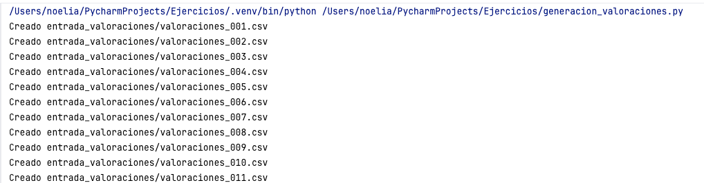

Introducción a procesamiento en tiempo real
INTRODUCCIÓN
Imagina una plataforma de cine en línea. Cada segundo pueden producirse nuevos eventos: un usuario reproduce una película, otro la puntúa, otro abandona la visualización y otro añade un título a su lista de favoritos. Si esperamos al final del día para analizar toda esa información, llegaremos tarde a muchas decisiones.
El procesamiento en tiempo real surge para analizar los datos a medida que se generan. En lugar de esperar a tener un fichero completo o una carga diaria, el sistema recibe eventos continuamente y actualiza los resultados de forma incremental.
Apache Spark permite trabajar con este tipo de escenarios mediante Structured Streaming, una API que permite procesar flujos de datos utilizando operaciones muy parecidas a las que ya se emplean con DataFrames estáticos.
CONTENIDO
¿Qué problema resuelve el procesamiento en tiempo real?
En un procesamiento batch tradicional, los datos se acumulan durante un periodo de tiempo y después se procesan todos juntos. Este enfoque es adecuado para informes diarios, cierres mensuales o análisis históricos.
Sin embargo, hay situaciones en las que el valor del dato depende de la rapidez con la que se analiza. Por ejemplo:
- Detectar una operación fraudulenta antes de que se complete.
- Mostrar recomendaciones mientras el usuario está navegando.
- Monitorizar sensores industriales y generar alertas.
- Analizar logs de una aplicación para detectar errores en producción.
- Calcular métricas de uso de una plataforma casi en tiempo real.
En estos casos, no basta con almacenar los datos y analizarlos después. Es necesario procesarlos conforme llegan.
Conceptos clave
Antes de escribir código, conviene entender algunos conceptos básicos.
| Concepto | Explicación | Ejemplo |
|---|---|---|
| Evento | Unidad individual de información generada por un sistema. | Un usuario valora una película con 5 estrellas. |
| Stream | Secuencia continua de eventos que llegan al sistema. | Valoraciones que llegan continuamente a la plataforma. |
| Micro-batch | Pequeño lote de eventos procesado en intervalos cortos. | Procesar las valoraciones recibidas cada 10 segundos. |
| Sink | Destino donde se escriben los resultados. | Consola, Parquet, base de datos o dashboard. |
Tabla 1: Tabla de contenidos sobre conceptos clave
Flujo básico de una aplicación de streaming
Una aplicación de streaming suele seguir el siguiente esquema:
Eventos de entrada
↓
Fuente de datos
↓
readStream
↓
Transformaciones
↓
writeStream
↓
Resultados actualizados
En Spark, la lectura de datos en streaming se realiza mediante readStream y la
escritura de resultados mediante writeStream. Entre ambos pasos pueden aplicarse
transformaciones similares a las utilizadas con DataFrames: filtros, agrupaciones,
agregaciones, joins o ventanas temporales.
Batch frente a streaming
| Aspecto | Procesamiento batch | Procesamiento streaming |
|---|---|---|
| Disponibilidad de datos | Datos completos antes de ejecutar. | Datos que llegan continuamente. |
| Frecuencia | Por lotes: diario, semanal, mensual. | Continua o casi continua. |
| Latencia | Mayor. | Menor. |
| Ejemplo | Informe diario de ventas. | Ventas por minuto en un dashboard. |
Tabla 2: Tabla de contenidos sobre batch frente a streaming
Spark Streaming y Structured Streaming
Spark ha tenido dos enfoques principales para trabajar con datos en tiempo real.
| Modelo | Base | Situación actual |
|---|---|---|
| Spark Streaming | DStreams basados en RDD | Modelo histórico. |
| Structured Streaming | DataFrames y Spark SQL | Modelo recomendado en aplicaciones modernas. |
Tabla 3: Tabla de contenidos sobre spark streaming y structured streaming
Structured Streaming resulta más sencillo para el estudiante porque mantiene la misma forma de trabajar que los DataFrames vistos en módulos anteriores. La diferencia principal es que el DataFrame no representa un conjunto cerrado de datos, sino una tabla que va creciendo con nuevos eventos.
La idea de tabla infinita
Structured Streaming interpreta un flujo de eventos como una tabla que nunca termina de crecer. Cada vez que llegan nuevos eventos, Spark actualiza el resultado de la consulta.
Tabla de valoraciones
+---------+---------+-----------+
| pelicula| usuario | valoracion|
+---------+---------+-----------+
| Matrix | u001 | 5 |
| Titanic | u002 | 4 |
| Avatar | u003 | 5 |
| ... | ... | ... |
+---------+---------+-----------+
La tabla sigue creciendo conforme llegan nuevos eventos.Sobre esta tabla se pueden escribir consultas como si fuera un DataFrame normal:
resultado = valoraciones.groupBy("pelicula").count()La diferencia es que el resultado se va actualizando mientras la aplicación continúa en ejecución.
Ventanas temporales
En muchos casos no interesa calcular un total global, sino analizar lo que ocurre en un intervalo de tiempo concreto. Para ello se utilizan ventanas temporales.
Por ejemplo, en una plataforma de cine podríamos calcular cuántas valoraciones recibe cada película cada minuto:
from pyspark.sql.functions import window
resultado = (
valoraciones
.groupBy(window("timestamp", "1 minute"), "pelicula")
.count()
)De esta forma, Spark no solo agrupa por película, sino también por el intervalo temporal al que pertenece cada evento.
Datos tardíos y watermark
En un sistema real, no todos los eventos llegan puntualmente. Puede ocurrir que un evento generado a las 12:00 llegue al sistema a las 12:05 debido a problemas de red, latencia del origen o reintentos.
Structured Streaming permite gestionar estos datos tardíos mediante watermarking. Un watermark indica durante cuánto tiempo se aceptan eventos retrasados antes de cerrar una ventana temporal.
valoraciones.withWatermark("timestamp", "5 minutes")En este ejemplo, Spark acepta eventos que lleguen hasta 5 minutos tarde. Pasado ese umbral, puede descartar eventos demasiado antiguos para evitar mantener estado indefinidamente.
Modos de salida
Cuando una consulta de streaming genera resultados, Spark necesita saber cómo escribirlos en el destino. Para ello existen distintos modos de salida.
| Modo | Funcionamiento | Uso típico |
|---|---|---|
| Append | Solo escribe filas nuevas. | Eventos ya cerrados o resultados que no cambian. |
| Update | Escribe solo las filas que han cambiado. | Agregaciones que se actualizan. |
| Complete | Escribe todo el resultado en cada actualización. | Ejercicios y agregaciones pequeñas. |
Tabla 4: Tabla de contenidos sobre modos de salida
Garantías de procesamiento
En sistemas distribuidos es importante entender qué ocurre si hay fallos, reintentos o duplicados. Las garantías de procesamiento describen cómo se tratan los eventos.
| Garantía | Significado |
|---|---|
| At-most-once | Un evento se procesa como máximo una vez. Puede perderse. |
| At-least-once | Un evento se procesa al menos una vez. Puede repetirse. |
| Exactly-once | Un evento se procesa exactamente una vez, si la fuente y el destino lo permiten. |
Tabla 5: Tabla de contenidos sobre garantías de procesamiento
En la práctica, conseguir exactly-once depende de la fuente de datos, del destino y de la configuración de checkpoints.
Ventajas y retos
| Ventajas | Retos |
|---|---|
| Permite reaccionar rápidamente ante nuevos datos. | Requiere controlar la latencia. |
| Integra batch y streaming con una API similar. | Puede necesitar gestionar estado. |
| Escala en entornos distribuidos. | Necesita monitorización continua. |
| Se integra con Kafka, ficheros, Parquet y otros sistemas. | Los errores pueden acumularse si el flujo no se controla. |
Tabla 6: Tabla de contenidos sobre ventajas y retos
CONCLUSIÓN
El procesamiento en tiempo real permite analizar datos mientras se generan, reduciendo la latencia entre la llegada de los eventos y la obtención de resultados. Esta capacidad es fundamental en escenarios donde las decisiones deben tomarse rápidamente.
Structured Streaming facilita este tipo de procesamiento porque permite trabajar con flujos de datos utilizando una API muy cercana a los DataFrames de Spark. Esto permite construir aplicaciones de streaming de forma progresiva, reutilizando conocimientos ya adquiridos sobre Spark SQL y procesamiento distribuido.
EJERCICIO RESUELTO
Procesamiento continuo de valoraciones de películas
En este ejercicio se va a simular una plataforma de cine que recibe valoraciones de películas de forma continua. Para que el origen de los datos sea fácil de entender, Spark leerá nuevos ficheros CSV desde un directorio de entrada.
Cada vez que se copie un nuevo fichero en la carpeta, Spark lo detectará y procesará sus filas como nuevos eventos.
Escenario
Se parte de una carpeta llamada entrada_valoraciones. Dentro de ella se irán copiando
ficheros CSV con valoraciones de películas.
Un primer fichero podría tener el siguiente contenido:
pelicula,usuario,valoracion
Matrix,u001,5
Interstellar,u002,4
Inception,u003,5
Titanic,u004,4
Avatar,u005,5Más adelante se puede añadir otro fichero con nuevas valoraciones:
pelicula,usuario,valoracion
Matrix,u006,4
Gladiator,u007,5
Titanic,u008,5
Avatar,u009,4
Inception,u010,5Objetivo
El programa deberá calcular de forma continua:
- Cuántas valoraciones ha recibido cada película.
- Cuál es la valoración media de cada película.
Pasos del ejercicio
- Crear una sesión Spark.
- Definir el esquema de los datos.
- Leer la carpeta de entrada mediante
readStream. - Agrupar los eventos por película.
- Calcular el número de valoraciones y la media.
- Mostrar los resultados en consola mediante
writeStream.
Código fuente
Preparación de la carpeta de entrada
Antes de ejecutar el programa, crea la carpeta de entrada:
mkdir -p entrada_valoracionesVamos a utilizar dos ficheros diferentes para este ejercicio:
- Generador de valoraciones: Fichero que genera los ficheros de valoración en la carpeta entrada valoraciones

- Procesador en streaming: Fichero que lee los ficheros de valoración y los procesa.
Figura 1: Generación y procesamiento de valoraciones de películas en streaming
Ambos ficheros se pueden procesar en paralelo desde Pycharm
Resultado esperado
Los resultados van apareciendo según se generan los ficheros:
-------------------------------------------
Batch: 1
-------------------------------------------
+-------------------+----------------+----------------+
|pelicula |num_valoraciones|valoracion_media|
+-------------------+----------------+----------------+
|Interstellar |4 |3.5 |
|El Padrino |7 |2.71 |
|Gladiator |3 |3.67 |
|Avatar |7 |3.57 |
|Pulp Fiction |3 |2.67 |
|Forrest Gump |5 |2.8 |
|Matrix |6 |3.5 |
|Inception |3 |2.33 |
|Titanic |5 |3.4 |
|El Caballero Oscuro|7 |2.0 |
+-------------------+----------------+----------------+
-------------------------------------------
Batch: 2
-------------------------------------------
+-------------------+----------------+----------------+
|pelicula |num_valoraciones|valoracion_media|
+-------------------+----------------+----------------+
|Interstellar |7 |2.86 |
|El Padrino |10 |3.0 |
|Gladiator |5 |2.6 |
|Avatar |10 |3.4 |
|Pulp Fiction |5 |2.8 |
|Forrest Gump |7 |2.86 |
|Matrix |8 |3.5 |
|Inception |4 |2.5 |
|Titanic |6 |3.67 |
|El Caballero Oscuro|8 |2.38 |
+-------------------+----------------+----------------+Conceptos trabajados
- Lectura continua de nuevos ficheros.
- Uso de
readStream. - Transformaciones sobre DataFrames de streaming.
- Agregaciones incrementales.
- Uso de
writeStreamy modo de salidacomplete.
Este ejercicio permite entender la idea central de Structured Streaming: Spark permanece escuchando una fuente de datos y actualiza los resultados cada vez que llegan nuevos eventos.